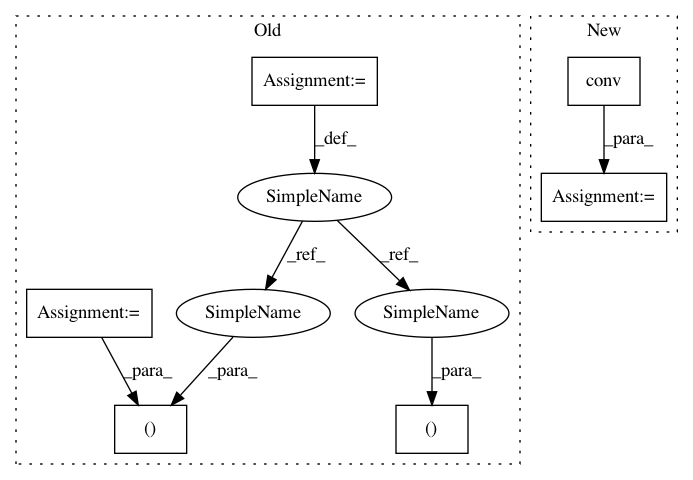

ba8de5d0776da82a0f57b710f9648539555164c8,test/nn/conv/test_x_conv.py,,test_x_conv,#,5
Before Change
def test_x_conv():
in_channels, out_channels = (16, 32)
edge_index = torch.tensor([[0, 0, 0, 1, 2, 3], [1, 2, 3, 0, 0, 0]])
num_nodes = edge_index.max().item() + 1
x = torch.randn((num_nodes, in_channels))
pos = torch.rand((num_nodes, 3))
conv = XConv(in_channels, out_channels, dim=3, kernel_size=2, dilation=2)
After Change
assert out1.size() == (8, 32)
torch.manual_seed(12345)
out2 = conv(x, pos, batch)
assert out2.size() == (8, 32)
jit = torch.jit.script(conv)
In pattern: SUPERPATTERN
Frequency: 3
Non-data size: 6
Instances
Project Name: rusty1s/pytorch_geometric
Commit Name: ba8de5d0776da82a0f57b710f9648539555164c8
Time: 2020-06-26
Author: matthias.fey@tu-dortmund.de
File Name: test/nn/conv/test_x_conv.py
Class Name:
Method Name: test_x_conv
Project Name: rusty1s/pytorch_geometric
Commit Name: 7b4892781e2198ad99a8655da03133505619040a
Time: 2020-06-28
Author: matthias.fey@tu-dortmund.de
File Name: test/nn/conv/test_arma_conv.py
Class Name:
Method Name: test_arma_conv
Project Name: rusty1s/pytorch_geometric
Commit Name: ba8de5d0776da82a0f57b710f9648539555164c8
Time: 2020-06-26
Author: matthias.fey@tu-dortmund.de
File Name: test/nn/conv/test_x_conv.py
Class Name:
Method Name: test_x_conv
Project Name: rusty1s/pytorch_geometric
Commit Name: d2ee769ba220e135312df733a256ad37f354227f
Time: 2020-06-24
Author: matthias.fey@tu-dortmund.de
File Name: test/nn/conv/test_gravnet_conv.py
Class Name:
Method Name: test_gravnet_conv